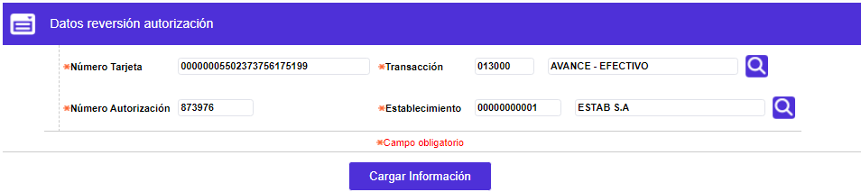
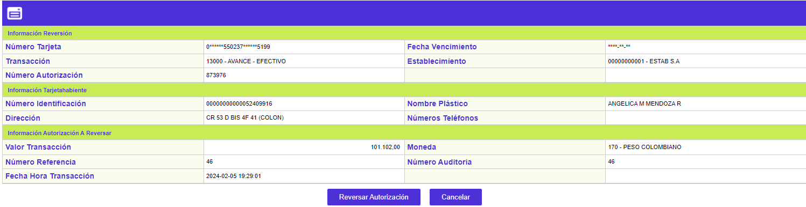
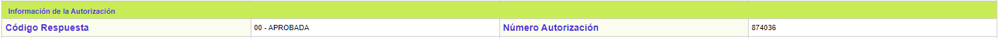

Reversión de autorizaciones
Esta función permite reversar, únicamente, las autorizaciones que fueron generadas a través de los formularios Registro de autorizaciones y Registro de autorizaciones especiales, siempre y cuando las mismas se encuentren vigentes, esto es, que aún no hayan sido procesadas, las cuales pueden encontrarse o visualizarse en la Consulta autorizaciones o Consulta bitácora autorizaciones. Esta reversión se realiza con el fin de restablecer el cupo disponible de su tarjeta y que el cliente pueda hacer uso del mismo.
Datos reversión autorización: El sistema verifica que todos los campos contengan datos, por ser obligatorios, luego de lo cual, permite avanzar mediante el botón especial Cargar información, siempre y cuando sea consistente con la almacenada en la base de datos.

|
Número tarjeta |
Campo obligatorio en el que se debe ingresar el mismo número de la tarjeta del cliente a la que se le generó la autorización que va a ser reversada. |
|
Transacción |
Campo obligatorio en el que se puede digitar o seleccionar de la lista de valores provista, el código de la clase de transacción para la que se generó la autorización que va a ser reversada. |
|
Número autorización |
Campo obligatorio, que, en un máximo de seis decimales, debe contener el mismo número de la autorización que va a ser reversada. |
|
Establecimiento |
Campo obligatorio en el que se puede digitar o seleccionar de la lista de valores provista, el código del comercio en el que se generó la autorización que va a ser reversada. |
Al cargar la información a través del botón especial, se muestra un formulario que contiene los botones Reversar Autorización y Cancelar.

|
Número tarjeta |
Muestra el número de tarjeta enmascarado (si aplica), para la que se está gestionando la reversión de la autorización. |
|
Fecha vencimiento |
Muestra la fecha de vencimiento, enmascarada (si aplica), de la tarjeta para la que se está gestionando la reversión de la autorización. |
|
Transacción |
Contiene el código y nombre de la transacción para la que se está gestionando la reversión de la autorización. |
|
Establecimiento |
Campo que muestra el código y nombre comercial del establecimiento en el que se efectuó la transacción para la que se gestiona la reversión de la autorización.
|
|
Número Autorización |
Campo que muestra el dato ingresado en el formulario anterior correspondiente a la autorización para la cual se gestiona su reversión. |
|
Número identificación |
Contiene el número del documento de identificación del tarjetahabiente. |
|
Nombre plástico |
Muestra el nombre del cliente como aparece en el plástico de la tarjeta. |
|
Dirección |
Campo que contiene la dirección de residencia que registra el tarjetahabiente. |
|
Números Teléfonos |
Campo contiene el número de teléfono que registra el tarjetahabiente. |
|
Valor transacción |
Campo que muestra el monto de la autorización para la que se gestiona su reversión. |
|
Moneda |
Contiene el código y nombre de la transacción en que se denominó la autorización para la que se gestiona su reversión. |
|
Número referencia |
Despliega el código asignado por el sistema a la autorización que va a ser reversada, y que la identifica para garantizar que sea única. |
|
Número Auditoría |
Contiene el código consecutivo que le fue asignado por el sistema, a la autorización a reversar, para monitorear los códigos de autorización otorgados. |
|
Fecha Hora Transacción |
En formato YYYY-MM-DD HH:MM:SS ilustra el momento en que se otorgó la autorización cuya reversión se está gestionando. |
Reversar Autorización: Al activar este botón especial, el sistema efectúa el proceso de reversión de la autorización y genera la respuesta a la misma.
En este bloque Información de la Autorización, se muestra la respuesta del sistema a la solicitud de la autorización.

|
Código respuesta |
Corresponde al código y descripción de la respuesta a la solicitud de reversión. |
|
Número autorización |
En caso de que la solicitud de reversión haya sido exitosa, en este campo aparece el número que fue asignado como aprobación de la misma. |